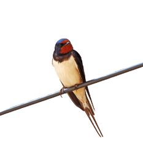
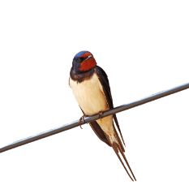

2019年3月2日
メジロ
午前12:00頃。海浜公園の梅林で目撃。満開のウメの花の蜜を吸うためか、10羽ほどが群れで来ていた。最近は私たちの街のような都市部でも道路傍の植え込みや街路樹でよく群れで見られる。
MORE >


 



2019年3月2日
メジロ
午前12:00頃。海浜公園の梅林で目撃。満開のウメの花の蜜を吸うためか、10羽ほどが群れで来ていた。最近は私たちの街のような都市部でも道路傍の植え込みや街路樹でよく群れで見られる。
MORE >
2018年12月22日
ジョウビタキ
午前11:00頃。2丁目公園の入り口付近で目撃。ナンキンハゼの枝に留まっていた。昨年も同じ公園で見られていたので毎年来ているのかもしれない。
MORE >
2018年11月28日
モズ
午後16:00頃。3丁目公園防風林の松の木のてっぺんで盛んに鳴いていた。この公園で見るのは２年ぶり。比較的午後の遅い時間に見ることが多い。
MORE >
谷津干潟 4/20（日）午前8:00〜
JR京葉線南船橋駅にて午前8:00集合。その後徒歩で谷津干潟まで移動します。
MORE >
花見川 2/9（日）午前10:00〜
京成八千代台駅東口で京成バス花見川団地行き循環バス。花見川団地中央公園バス停前公園で午前10:00集合。
MORE >
海浜公園 12/1（日）午前10:00〜

JR京葉線海浜幕張駅より徒歩５分。ホテルスプリングスロビー前で午前10:00集合。その後海浜公園内の梅林に移動します。
MORE >
2018年3月3日（日）10:00〜
海浜公園観察会
エナガ、メジロ、ハクセキレイ。シジュウカラ、スズメ、キジバト、ハシブトガラスを確認しました。
MORE >
2018年1月13日（日）8:00〜
谷津干潟観察会

オナガガモ、ヒドリガモ、ホシハジロ、ハシビロガモを観察。
MORE >
2017年11月11日（日）9:00〜
三丁目公園観察会

モズ、キビタキ、ハクセキレイ。シジュウカラ、スズメを確認しました。
MORE >